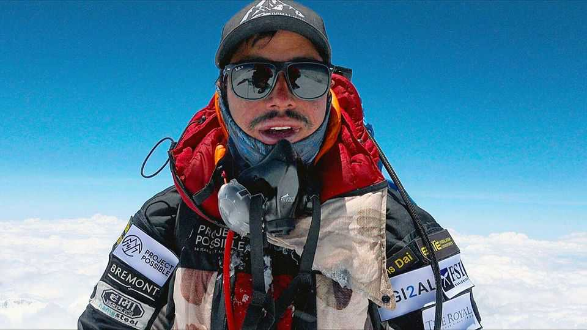

Nirmal Purja performed momentous feats in the Death Zone
The Gurkha mountaineer and Netflix star died in an avalanche on July 30th, aged 43

Aug 13th 2026
His climbing career was still young when Nirmal Purja went up Dhaulagiri, the seventh-highest peak in the world. He had been born in a village in its foothills, in a house shared with chickens, but the family had moved to Nepal’s lowland south when he was five. So he had barely registered the magnificent wall of rock and snow, 8,167 metres of it, filling the horizon. Now, at 30, he was one of a climbing party toiling across it.
He took his turn, of course, at trailblazing. And as he went, plunging knee-high into the snow, he was learning something extraordinary about himself. The altitude didn’t seem to be affecting him. He was strong. Each step arrived with power. Boom! Boom! Boom! Soon, the rest of the party were little black dots far below. He was in the flow. In the zone, bro! By the end he had trailblazed 70% of the route. It was more sensible to share the task, and he accepted that. But if there were mountains to climb, he wanted to do it now. And do it fast, because he could.
His whole purpose in life was to perform feats others thought impossible. He became world-famous when, in 2019, he left the British army (where he was a Gurkha and in the Special Forces) to climb all 14 mountains over 8,000 metres. That was the Death Zone, in which the unassisted human body began to fail. It took him six months and six days; the previous record was more than seven years. He had laboured to find funding, but Project Possible, as he called it, was taken up by Netflix. They made it into a documentary, he wrote it up in a book, and thus he became a star. Billboards of him perching on summits, with the sun dazzling off his stylish reflector glasses, appeared in Manhattan. He was mobbed at airports, and in Nepal he was shawled as a hero. Though ignorant of alcohol until he was 26, he came to like Taittinger champagne. Western climbers hoping to be guided singly by him on one of his Elite Expeditions could expect to pay a million dollars.
Because he lived to climb, the challenges went on. He specialised in ballsy back-to-back ascents, he and his Sherpa teams barely drawing breath between them. Mountains could be climbed in different combinations, or repeatedly. Makalu, the world’s fifth-highest mountain, was topped in 18 hours just four days after climbing Everest, and much of that time had been spent celebrating, not sleeping. He climbed Kangchenjunga, the world’s third-highest, in one hit in 21 hours with a stonking hangover from summitting Dhaulagiri three days before.
The array of great 8,000-ers drew him back again and again. This is yours, Nims. He travelled light, sometimes without food or sleeping bag, with a thermos of hot water to melt snow to drink. There was just time to appreciate the view from their summits, especially the orange and pink of sunrise with the wispy clouds blowing away, before he got on with descending. But Everest didn’t have a particular lure for him. His first attempt on it in 2016 had been unwise, a quick-as-possible solo climb (crazy, everyone said), in which he, not yet a badass trailblazer, had met altitude sickness so bad that his wheezing lungs soon forced him down. He later went up with ease time after time, but hated the crowds and the rubbish. The better mountain to conquer was K2, the world’s second-highest, in winter. That had never been done, and he did it with an all-Nepali team who sang the national anthem at the top, proving how splendid Sherpa climbers were.
Critics had a field day with his climbing style. He used bottled oxygen and fixed ropes, and hopped on helicopters to get from one base camp to another. Purists scorned all that. Rather than racing up mountains, they said, he ought to be finding new routes. He waved it all off, especially the gripe about oxygen. If he didn’t carry it, he couldn’t rescue the many climbers he found whose oxygen had run out. In any case, he could climb an 8,000-er without bottled air too, and often did, just to give the carpers a good two-finger salute. As for stardom, this was not about him, brother. The whole point of Project Possible was to show people everywhere what they could achieve if they set their minds to it; how to conquer their own mountains, whatever those were.
Few climbers were as fit for it as he was. He had started training at his English-medium boarding school, doing runs at night to be sure of getting into the Gurkhas as his father and brothers had done. In civilian life, he would swim 100 lengths after work. Once a soldier at Catterick, bullied by British squaddies for his accent and his dark skin, he set out to prove he could join any elite force. Yomping one day in the Welsh hills, carrying a 75-lb pack on his back, he felt extra-inspired when the instructor added another rock. Quitting is not in the blood, sir.
He had close brushes with death, too. The first came when, as a member of the Special Forces, a bullet from a sniper threw him off a roof, smashed his rifle butt and sliced across his jaw. The most memorable came on Nanga Parbat, when for a second he let go of a rope. As he tumbled, building up speed, his ice axe failing to get purchase in the snow, he expected to die, but caught a lower section of the rope in time. Scared of dying? No way. Everyone had to die sometime. He didn’t make much of the juniper-burning and rice-throwing that Sherpas did before their ascents; his approach was military, 100% attack. But before he climbed he liked to have a conversation with the mountain, alone. He would address the wall of rock and ice and ask, “Can I go, or not?”
Annapurna said yes, early in his career, and then sent down an avalanche that almost wiped out his team. But he kept up the habit. On Broad Peak this summer he asked the same question of that mountain, where recent snowfall had put other climbers off. Whatever answer he initially received, on July 30th another avalanche carried him and his party away. He had almost completed a third round of all the 8,000-ers, the second one without bottled air. The mountain, in the end, had the last word. ■